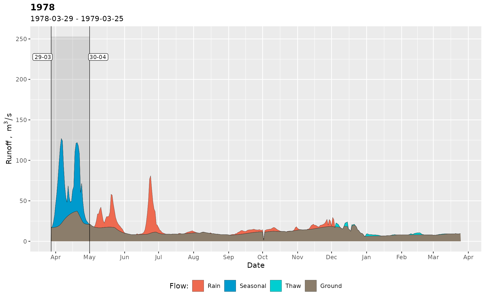

Run this function once at the beginning of the session. All plots will be labeled using the selected language.
Details
Note to Linux users: the desired locale may not be installed on the system. A list of available locales can be obtained in bash terminal:
locale -a
Russian locale is ru_RU.UTF-8, and Ukrainian locale is uk_UA.UTF-8. If absent in the list, then install the desired locales by:
sudo locale-gen ru_RU.UTF-8
sudo locale-gen uk_UA.UTF-8
sudo update-locale
Then restart R session, and localization should work as expected.
Examples
library(grwat)
data(spas) # example Spas-Zagorye data is included with grwat package
# separate
sep = gr_separate(spas, params = gr_get_params(reg = 'center'))
#> grwat: data frame is correct
#> grwat: parameters list and types are OK
# Default is English
gr_set_locale('EN')
gr_plot_sep(sep, 1978)
